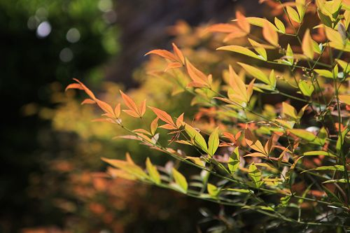
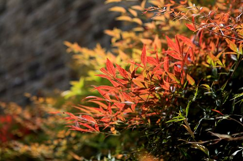

Walking, shooting at noon
Heavens Divide.mp3
Petals of white
Cover fields flowing in grieving tears
And all the hearts once new,old and shattered now
Love can kill,love will die
Give me wings to fly
Fleeing this world so cold
I just wonder why
Cold as the dark
Now my words,are frosted with every breath
Still the hate burns wild,growing inside this heart
When the wind changes course when the star align
I will reach out to you and leave this all behind
When heavens divide
When heavens divide
I will see the choices within my hands
How can we ever protect and fight with our tiny souls
Let me shine like the sun through the doubts of fear
Do you feel the storm approach as the end draws near
When heavens divide
Time will come to softly lay me down
Then I can see a face that I long to see
And for you,only you I would give anything
Leaving a trace for love to find a way
When heavens divide
I will dive into the fire
Spilling the blood of my desire
The very last time
My name scorched into the sky
When heavens divide
I will see the choices within my hands
How can we ever protect and fight with our tiny souls
Let me shine like the sun through the doubts of fear
Do you feel the storm approach as the end draws near
When heavens divide
Time will come to softly lay me down
Then I can see a face that I long to see
And for you,only you I would give anything
Leaving a trace for love to find a way
When heavens divide
And for you,only you I would give anything
Leaving a trace for love to find a way
When heavens divide